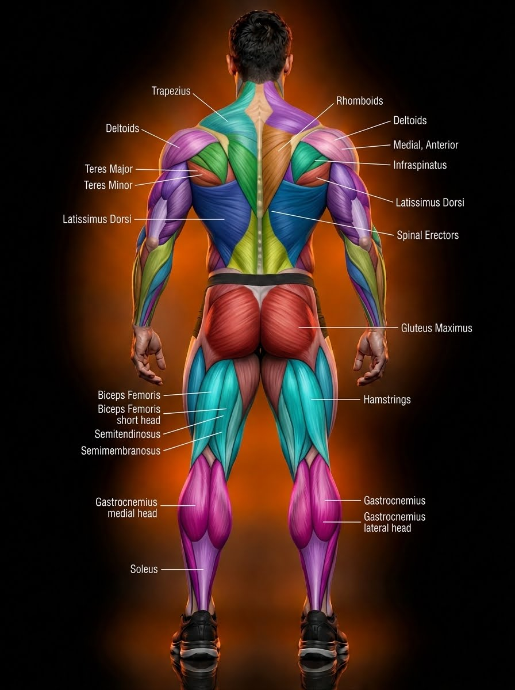

Original user guide and tracing notes
The guide supplied the intended regions. Boundaries were manually registered to #7, ignoring label lines. Trapezius covers the rhomboids; the guide's mismatched labels were not carried over. Hamstrings are represented as outer and inner surface regions. Calf heads are separated, with soleus only along the visible sides. The central Achilles area is excluded.

Editable SVG source